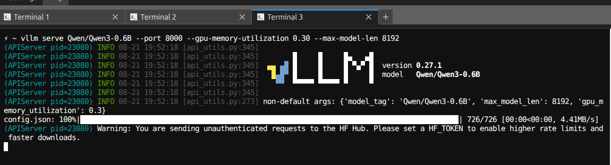
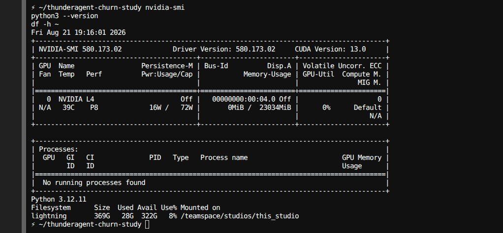
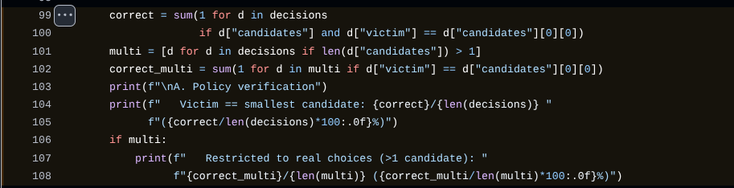

Two Scheduling Decisions, One Rule
A program-aware scheduler sorts by context size twice: at admission and at eviction. The two sorts hurt opposite ends of the size distribution, and neither shows up in throughput or mean latency.
15 September 2026
ThunderAgent is a program-aware scheduler for agentic LLM inference (ICML 2026 Spotlight). It schedules whole agent trajectories, called programs, instead of single calls. It already ships as the rollout gateway in SkyRL and inside NVIDIA Dynamo.
I went looking for eviction churn and found something narrower: one sort rule, applied at two decision points, harming opposite populations. Throughput is fine. Mean latency is fine. One group waits 447 seconds to start.
- The short report. The four-page brief. Six minutes, every number linked.
- The setup. Why RL rollouts care about makespan, not mean latency.
- Eviction is smallest-first. 40 of 40 decisions picked the smallest eligible program.
- The confound, controlled. Short programs are not just eligible more often.
- Admission is smallest-first too. The same sort, one decision earlier.
- The trap. A correlation saying bigger contexts run faster.
- Intervention A, admission order. FIFO wins makespan in every seed.
- Intervention B, fatigue-aware eviction. Worst-case protection, not a speedup.
- Limits. What is a source fact and what is scale-dependent.


ThunderAgent optimizes every scheduling decision by instantaneous token count. That is correct for the objective it targets, and the eviction side is proven optimal in Lemma 4.1 of the paper. This brief is not about that. It is about a second place the same ordering rule applies — admission of new programs — where it produces something the paper's own Appendix E argument (program-level latency matters more than per-step latency) would predict should not happen.
Under burst arrival, a program's wait for its first response scales almost linearly with its prompt size.
About 75% of programs waited over 20 seconds just to start — 48/64, 51/64, 47/64.
Every step after the first averaged 0.6 s. This is purely a first-request effect.
In _resume_paused_programs, every waiting program is sorted globally, smallest tokens first, before being split into priority groups:
paused_programs = self._get_paused_programs_sorted(ascending=True)Since new_program_group inherits that ordering, brand-new programs are admitted smallest-first, identical to how running programs are evicted smallest-first. Under a burst of simultaneous arrivals, large-prompt programs land at the back of the queue and stay there.
Two groups, same run, same 43,216-token capacity.
The small group gets in almost instantly and pays on the back end. The large group is never touched once running, and pays entirely on the front end — nearly 5× longer overall.
The two effects are statistically independent — each drives its own phase.
| Admission wait | Execution time | |
|---|---|---|
| Prompt size | +0.82 | −0.43 |
| Eviction count | −0.34 | +0.69 |
The negative size-vs-execution number initially looked odd — bigger prompts should execute slower, not faster. Partial-correlation testing shows it collapses from −0.43 to −0.13 once eviction count is held fixed. Large programs execute faster only because they are essentially never evicted — not because size itself helps.
vLLM 0.27.1 · Qwen3-0.6B
single backend
contexts 1,500–8,000 tok
synthetic agent workload driving the real, unmodified scheduler via
program_idThis is far smaller than your 8× H100 evaluations. The ordering mechanism is confirmed directly in source, so it will hold at any scale — but the absolute wait times (up to 447 s here) will differ at production scale and should not be read as production numbers.
If deliberate, the tradeoff — maximize concurrent programs per unit of KV cache, at the cost of large-prompt TTFT under burst load — is a reasonable one. It just seemed worth surfacing given where the system is now deployed.
Nothing here contradicts the paper. The eviction policy does exactly what Lemma 4.1 says it should.
The admission path applies the same logic to a different decision, under conditions — burst arrival, grouped rollouts — the original eviction analysis did not model. That combination is the entire finding.
The bias above raises an obvious question: what would changing it cost? new_program_group's sort was patched behind an environment variable, isolated so eviction and resume ordering stay untouched — three admission orderings, three seeds each, same workload, same eviction path.
| Smallest-first | FIFO | Largest-first | |
|---|---|---|---|
| corr(size, TTFT) | +0.855 / +0.747 / +0.868 | +0.272 / +0.230 / +0.406 | +0.113 / −0.019 / +0.330 |
| Large/small wait ratio | 9.4× / 8.7× / 9.8× | 4.8× / 3.9× / 2.6× | 1.3× / 1.6× / 1.6× |
| Makespan | 526 / 512 / 516 s | 504 / 495 / 498 s | 489 / 508 / 508 s |
| Worst group completion | 518 / 496 / 503 s | 488 / 474 / 480 s | 472 / 491 / 492 s |
| Mean group completion | 259 / 285 / 272 s | 289 / 286 / 300 s | 341 / 367 / 334 s |
| Total evictions (mean) | 17.7 | 22.3 | 26.0 |
FIFO wins on makespan and worst-group completion in all three seeds — costing ~20–30 s of mean group completion, and cutting the size-fairness ratio from roughly 9.3× to 3.8×.
Largest-first's seed-100 makespan win (−7.1%) did not replicate in seeds 101 or 102 (+0.6%, −1.6%). Treat that arm's seed-100 result as noise, not a finding.
A standard scheduling result: shortest-processing-time ordering minimizes mean flow time — upstream's actual behaviour on that metric — while longest-processing-time ordering minimizes makespan. FIFO lands between the two.
That matters for synchronous RL rollouts: a training step is gated on the group that finishes last, not the average one. Mean completion is close to irrelevant there; makespan blocks the next step.
| Small-1st | FIFO | |
|---|---|---|
| Max evictions on one program | 3.3 | 2.7 |
| Gini (eviction spread) | 0.847 | 0.770 |
| Capacity breaches per run | 15.3 | 21.0 |
| Evictions per breach | 1.15 | 1.06 |
FIFO breaches KV capacity more often — a size-mixed resident population oscillates near the limit — but each breach is smaller, not larger, and the extra events don't concentrate. A real but shallow cost.
new_program_group, resume ordering for running programs untouched; full patch, harness and replication instructions are in the linked repository. Links on this page are branch-pinned, pending the verification pass applied to pages 1–3.
4 / 4
Detailed explanation
The report above is the claim. What follows is how I got there, including two hypotheses that failed and one result that did not replicate.
2. The setup
- The rule. When KV memory fills, ThunderAgent evicts the program with the smallest context. Recompute cost scales as O(c²), so small is cheapest. Lemma 4.1 proves shortest-first minimizes total recompute. That is correct, and not in dispute here.
- The mismatch. In GRPO, a group of rollouts shares one prompt, and advantages wait for all of them. The binding metric is makespan, the finish time of the last member. ThunderAgent optimizes mean latency.
- The testbed. 1× L4, one vLLM backend, Qwen3-0.6B, synthetic programs whose tool calls are
sleepcalls, 43,216-token KV capacity, three seeds.
3. Eviction is smallest-first
- The patched router logs the full candidate list at each decision. So this reads which program was chosen from a known pool; nothing is estimated.
- 40 of 40 decisions across three seeds picked the smallest eligible candidate, from pools of 7 to 16.[3]

- Conditional on eligibility,
corr(size, evicted | eligible)= −0.53 / −0.33 / −0.33.
4. The confound, controlled
The objection: short programs cycle faster, so they are simply eligible more often. Four controls say no.
- Equal opportunity. Every program ran exactly 10 steps.
- Conditioned on eligibility. The 40 of 40 result already holds the pool fixed.
- Spearman plus permutation. ρ = −0.668 and −0.626; chance that all long programs escape: 1.4e-7 and 3.9e-7.[4]
- The never-evicted set. Size-blind eviction puts them at mean rank 19.5 of 40. They sit at 32.4 and 33.1.
Clearest pair: prog-038 (1,833 tok) was eligible 4 times and evicted 4 times. prog-000 (7,333 tok) was eligible 5 times and evicted zero times.
What the churn costs: about 24 s per affected program, measured within size bands (+24.5 s at 40 programs, +23.8 s at 60).[5]
5. Admission is smallest-first too
- In
_resume_paused_programs, waiting programs are sorted ascending before the split into priority groups (router.py#L846).[1]new_program_groupinherits that order. - NVIDIA's Dynamo docs describe the same thing: "it resumes the smallest-token programs first."[2] Two implementations, one ordering. Read it as deliberate.
- Result (report, page 1):
corr(size, TTFT)= +0.855 / +0.745 / +0.870, and first response ranges from 0.5 s to 404.4 s in one run. - Admission wait is 59 to 71% of total program time.
corr(group size, admission span)= +0.907, the strongest in the study.[6]
- Eviction mirrors it at group level:
corr(group size, evictions)= −0.840 / −0.841 / −0.900.[7] - The scheduler has no RL-group concept. Group members share a prompt, so they have similar token counts. The sort hits whole groups, which is exactly the level makespan is computed at.
6. The trap
After admission, corr(size, execution) is −0.43. Read literally, bigger contexts run faster. Two explanations tested:
- Refuted: contention.
corr(concurrency at admit, execution)= −0.017 / +0.010. Controlling for it slightly strengthens the size effect. - Confirmed: eviction mediation.
corr(evictions, execution)= +0.69. With eviction count held fixed, the size effect collapses from −0.43 to −0.13.[8]
- Takeaway: large programs run faster because they are never evicted. It is the eviction finding in disguise.
- Method check: the partial correlation was validated on synthetic data first (+0.056 on a null, +0.572 on a real effect).
7. Intervention A, admission order
- Design. Only
new_program_group's sort changes; resume and eviction are untouched. Three arms, three seeds. - Control. Smallest-first reproduces the baseline (+0.855 on seed 100), which is what makes the other arms readable.
Results (full table on report page 4):[9]
- FIFO wins makespan and worst-group completion in all three seeds.
- Size-fairness ratio drops from about 9.3× to 3.8×.
- Cost: 20 to 30 s of mean group completion.
- Largest-first's −7.1% on seed 100 did not replicate (+0.6%, −1.6%). Noise.
Why FIFO evicts more (22.3 vs 17.7 per run):
- Refuted: KV pressure. Resident tokens at eviction were 2% lower under FIFO (62,035 vs 63,219).
- Confirmed: oscillation. FIFO breaches capacity more often (21.0 vs 15.3 per run), but each breach is smaller (1.06 vs 1.15 evictions).[10]
- No concentration. Max per program is 2.7 vs 3.3; Gini is 0.770 vs 0.847.[11]
8. Intervention B, fatigue-aware eviction
Penalize a program in the eviction ranking by how often it has already been evicted. beta=0 is exact upstream; beta=1 applies the penalty.
- Max evictions on one program: 3.0 → 1.0
- Gini: 0.84 → 0.75
- Throughput: +0.2% ± 1.1%, consistent with zero
- Control diverged from upstream zero times across three seeds
9. Limits
- Source facts, true at any scale: eviction is smallest-first, admission is smallest-first, and there is no RL-group concept.
- Theory-backed: the direction of the FIFO result.
- Scale-dependent: every number in seconds. One L4, a 0.6B model, a synthetic workload, three seeds.
- Not yet public: the router patches (churn instrumentation and the
ADMIT_ORDERswitch). - Full caveats are in the README.[13]
Next I want a multi-backend replication, since oscillation near a capacity limit changes character when the limit is per-backend. The arm comparison is the part to rerun first.
References
- ThunderAgent,
_resume_paused_programsascending sort. github.com/ThunderAgent-org/ThunderAgent/blob/7ddc861/ThunderAgent/scheduler/router.py#L846 - NVIDIA Dynamo, ThunderAgent program scheduler user guide. docs.nvidia.com/dynamo/dev/user-guides/agents/thunder-agent-program-scheduler
- Exact eviction decisions, 40 of 40. analysis/exact_decisions.py#L99-L108
- Exposure control, Spearman and permutation tests. analysis/exposure_control.py
- Within-band harm estimate. analysis/harm_analysis.py
- Admission wait vs execution time. analysis/separate_effects.py#L76-L85
- Group-level eviction correlations. analysis/grpo_analysis.py
- Partial correlation and mediation. analysis/why_faster.py#L96-L103
- Admission-order arm comparison. analysis/compare_admission.py
- Capacity breaches and evictions per breach. analysis/burst_check.py#L37-L46
- Concentration checks, max per program and Gini. analysis/why_more_evictions.py
- Fatigue-aware eviction sweep. analysis/sweep_compare.py
- Study README, full caveat list. README caveats